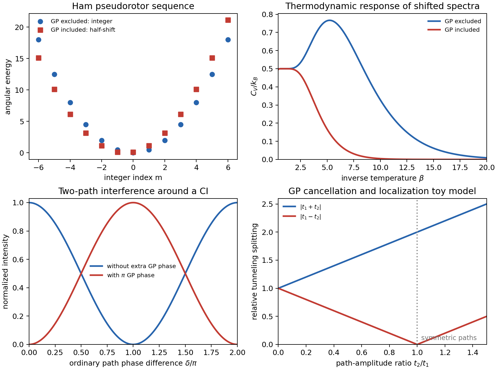

Model Calculation
Geometric Phase: Key Theory Reproductions
This note collects several key theory and computation papers on molecular geometric phase effects near conical intersections, then reproduces their shared mechanisms with intentionally small models. The goal is not yet a full quantum scattering or full vibronic calculation. The goal is to isolate the topological moves that recur across the literature: half-integer pseudorotational quantization, a \(\pi\) phase shift in path interference, and cancellation of symmetric tunneling routes.
Literature Map
| Reference | Core result | Small reproduction here |
|---|---|---|
| Longuet-Higgins et al. 1958; Ham 1987[1],[2] | The linear \(E\otimes e\) Jahn-Teller problem has a Berry-phase-induced half-integer pseudorotational sequence. | Angular spectra \(E_m\propto m^2\) versus \(E_m\propto(m+1/2)^2\). |
| Berry 1984; Mead-Truhlar 1979; Mead 1992[3],[4],[5] | A loop around a conical intersection carries a topological phase that can be represented as a sign change or vector potential. | Two-path interference with and without an added \(\pi\) phase. |
| Althorpe 2006; Althorpe, Stecher, Bouakline 2008[6],[7] | Reactive-path contributions can be organized by topology; the GP flips interference between paths that wind differently around the CI. | Interference intensity \(I\propto |1\pm e^{i\delta}|^2\). |
| Ryabinkin and Izmaylov 2013; Gherib, Ryabinkin, Izmaylov 2015[8],[9] | Near a CI, GP can suppress low-energy transfer and produce localization-like behavior by destructive interference. | Two-route tunneling splitting \(|t_1+t_2|\) versus \(|t_1-t_2|\). |
| Xie, Yarkony, Guo 2017[10] | In nonadiabatic tunneling through a CI region, GP can turn constructive interference into destructive interference and change rates/lifetimes. | The same two-path interference panel gives the minimal phase rule. |
| Zhai, Shang, Liu 2026[11] | The same topology affects imaginary-time thermodynamics and is naturally retained by multi-electronic-state path integrals. | Pseudorotor heat-capacity response from shifted spectra. |
Reproduction 1: Ham Pseudorotor Sequence
The fixed-radius pseudorotor is the smallest model that retains the angular topology of the \(E\otimes e\) Jahn-Teller trough. If the GP is excluded, the nuclear angular wavefunction is periodic:
If the GP is included, the nuclear wavefunction must compensate the sign change of the adiabatic electronic state after one loop around the CI. Equivalently, the angular momentum is shifted by one half:
The lowest GP-included angular states are the two degenerate choices \(m+1/2=\pm 1/2\). This reproduces the mechanism behind Ham's sequence of Jahn-Teller states, stripped down to a one-dimensional angular spectrum.
Reproduction 2: Two-Path Interference
Many real-time GP effects reduce to a path-interference statement. Suppose two nuclear routes go around opposite sides of a conical intersection and recombine. Without the GP, a minimal amplitude is
where \(\delta\) is the ordinary dynamical phase difference. If the two routes differ topologically by one winding around the CI, the GP contributes an extra minus sign:
The normalized intensities are therefore
Constructive and destructive interference are exchanged. This is the minimal algebra behind topological explanations of GP effects in reactive scattering and CI-mediated tunneling.
Reproduction 3: Localization by Tunneling Cancellation
A similarly compact model captures GP-induced localization. Imagine transfer between two equivalent nuclear regions through two semiclassical routes, with amplitudes \(t_1\) and \(t_2\). Without GP, the effective coupling is proportional to
With a \(\pi\) phase between the routes,
If the routes are symmetry-related, \(t_1=t_2\), the GP-included coupling vanishes. The two regions stop communicating in this toy model, which is the cleanest way to see why the GP can suppress low-energy transfer and create localization-like behavior near a conical intersection.

The script and CSV for this figure are available at assets/code/jt/gp_key_theory_reproductions.py and assets/img/jt/gp-key-theory-reproductions.csv.
What Is Not Reproduced Yet
These panels are mechanism reproductions, not full paper reproductions. They do not solve the full two-dimensional vibronic Schrödinger equation, do not propagate a wavepacket on coupled conical-intersection surfaces, and do not compute reaction scattering cross sections. Their value is that they make the topological algebra explicit before committing to a heavier numerical calculation.
The next useful reproduction steps are: first, a direct polar-grid or basis-set solution of the \(E\otimes e\) vibronic Hamiltonian to recover the GP-included and GP-excluded low-energy spectra; second, a two-dimensional wavepacket around a model CI to visualize the GP-induced nodal line; third, a closer reproduction of a published tunneling/localization benchmark from the Ryabinkin-Izmaylov or Xie-Yarkony-Guo papers.
References
- H. C. Longuet-Higgins, U. Opik, M. H. L. Pryce, and R. A. Sack, "Studies of the Jahn-Teller Effect. II. The Dynamical Problem," Proc. R. Soc. Lond. A 244, 1-16 (1958). DOI: 10.1098/rspa.1958.0022.
- F. S. Ham, "Berry's Geometrical Phase and the Sequence of States in the Jahn-Teller Effect," Phys. Rev. Lett. 58, 725-728 (1987). DOI: 10.1103/PhysRevLett.58.725.
- M. V. Berry, "Quantal Phase Factors Accompanying Adiabatic Changes," Proc. R. Soc. Lond. A 392, 45-57 (1984). DOI: 10.1098/rspa.1984.0023.
- C. A. Mead and D. G. Truhlar, "On the Determination of Born-Oppenheimer Nuclear Motion Wave Functions Including Complications Due to Conical Intersections and Identical Nuclei," J. Chem. Phys. 70, 2284-2296 (1979). DOI: 10.1063/1.437734.
- C. A. Mead, "The Geometric Phase in Molecular Systems," Rev. Mod. Phys. 64, 51-85 (1992). DOI: 10.1103/RevModPhys.64.51.
- S. C. Althorpe, "General Explanation of Geometric Phase Effects in Reactive Systems: Unwinding the Nuclear Wave Function Using Simple Topology," J. Chem. Phys. 124, 084105 (2006). DOI: 10.1063/1.2161220.
- S. C. Althorpe, T. Stecher, and A. Bouakline, "Effect of the Geometric Phase on Nuclear Dynamics at a Conical Intersection: Extension of a Recent Topological Approach from One to Two Coupled Surfaces," J. Chem. Phys. 129, 214117 (2008). DOI: 10.1063/1.3031215.
- I. G. Ryabinkin and A. F. Izmaylov, "Geometric Phase Effects in Dynamics near Conical Intersections: Symmetry Breaking and Spatial Localization," Phys. Rev. Lett. 111, 220406 (2013). DOI: 10.1103/PhysRevLett.111.220406.
- R. Gherib, I. G. Ryabinkin, and A. F. Izmaylov, "Why Do Mixed Quantum-Classical Methods Describe Short-Time Dynamics through Conical Intersections So Well? Analysis of Geometric Phase Effects," J. Chem. Theory Comput. 11, 1375-1382 (2015). DOI: 10.1021/acs.jctc.5b00072.
- C. Xie, D. R. Yarkony, and H. Guo, "Nonadiabatic Tunneling via Conical Intersections and the Role of the Geometric Phase," Phys. Rev. A 95, 022104 (2017). DOI: 10.1103/PhysRevA.95.022104.
- Y. Zhai, Y. Shang, and J. Liu, "Geometric Phase Effect in Thermodynamic Properties and in the Imaginary-Time Multi-Electronic-State Path Integral Formulation," J. Phys. Chem. Lett. 17, 4274-4291 (2026). DOI: 10.1021/acs.jpclett.6c00429.